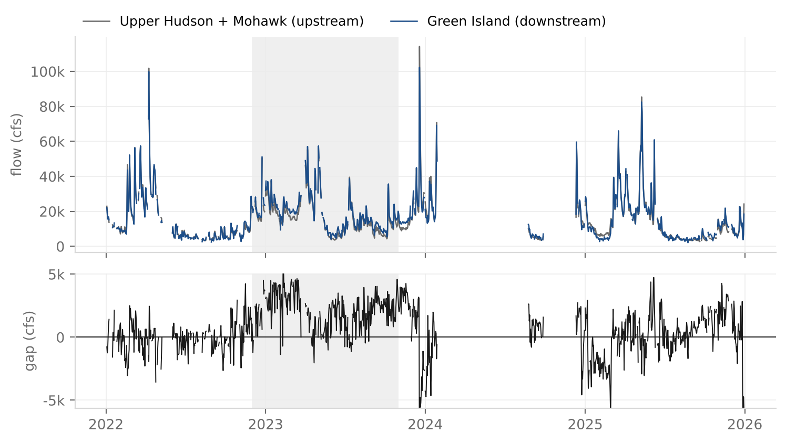
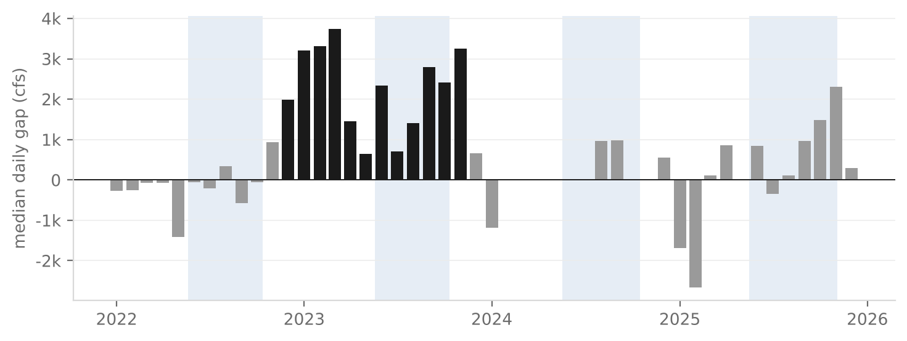
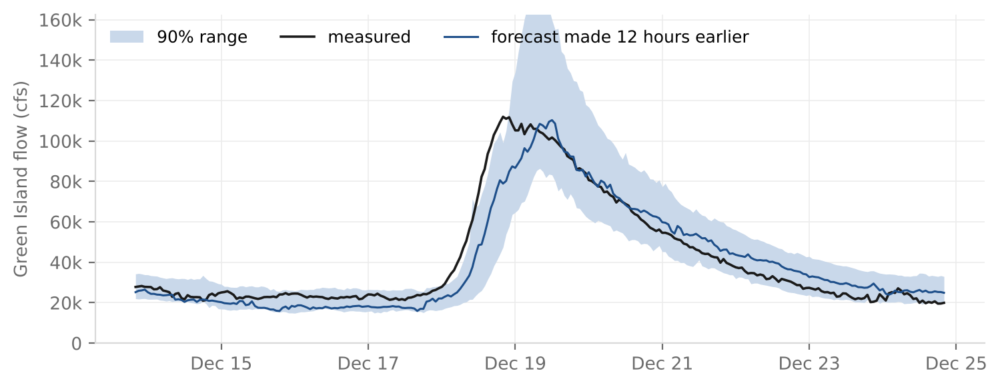

Mass-Balance Validation of Streamflow Gauges at the Hudson–Mohawk Confluence
Summary
The U.S. Geological Survey measures river flow at gauges across the country, and its data are used for flood forecasting, water management and research. This project checks three neighbouring gauges against each other using a basic principle of chemical engineering: water is conserved, so the flow into a stretch of river must equal the flow out. On a typical day the three gauges agree to within 5%. The exception is December 2022 to November 2023, when Green Island read about 2,600 cfs more than the two upstream gauges combined. A gap that switches on and off like this, regardless of season or flow, points to a calibration error at one gauge.
1The question
Near Troy, New York, the Mohawk River joins the Hudson. USGS measures the flow on each river just above the junction, and again at Green Island, just below it. Because water is conserved, the flow at Green Island should equal the two upstream flows added together, allowing about an hour for the water to travel between gauges.
When the two sides do not match, either a gauge is wrong or water is entering or leaving somewhere unmeasured. The project asks how often they match, and what explains the times they do not.
Flow is measured in cubic feet per second (cfs), the volume of water passing a gauge each second. One cubic foot is about 28 litres, so Green Island's typical 12,775 cfs is roughly 360,000 litres every second.
2Data
Readings every 15 minutes from three USGS gauges, 2022 to 2025, downloaded from the USGS Water Data API, with hourly rainfall for each river basin from the Open-Meteo archive. Every reading was checked for stuck sensors, spikes, ice and values USGS marks as estimated; 4.7% were flagged and left out.
| Gauge | USGS site | Median flow (cfs) | Readings | Flagged |
|---|---|---|---|---|
| Hudson River above Lock 1, near Waterford | 01335754 | 7,410 | 139,343 | 4.8% |
| Mohawk River at Cohoes | 01357500 | 4,120 | 139,824 | 0.3% |
| Hudson River at Green Island | 01358000 | 12,775 | 114,602 | 3.6% |
3Does the water add up?
Most of the time, yes. On a typical day the flow at Green Island matches the upstream total to within 5.1% (median gap +5.1%). Hour to hour the gap is larger (13.5% median), because the dams and locks between the gauges hold water back and release it in pulses. That variation is real river behaviour rather than measurement error.

4Is it the canal?
The gap looks seasonal, and the Erie Canal diverts part of the Mohawk around its gauge and returns it to the Hudson above Green Island, so it was the natural first candidate. I tested it against the canal's opening and closing dates for each year from 2022 to 2025.
The canal does not explain the gap. Measured in cubic feet per second, the gap is about the same with the canal open (591 cfs) as closed (639 cfs), and it moved in the expected direction at only 3 of 5 openings and closings. It only appears seasonal in percentage terms, because the river is low in late summer (6,640 cfs against 18,440 cfs).

5A year-long offset
From December 2022 to November 2023 the gap rises to about 2,600 cfs, then falls back almost at once. Outside that period it is 99 cfs (+0.7%).
A physical cause, such as an unmeasured tributary or a diversion, would follow the seasons or the flow. A gap that switches on, holds for a year and switches off is the signature of a measurement problem: one gauge's calibration drifting and later being corrected. The next step is to compare each gauge with the hand measurements USGS field crews take several times a year, which will show which gauge drifted.
6Forecasting
Five models predict the flow at Green Island 6 to 24 hours ahead from upstream flows and rainfall. Each was trained only on earlier data and tested on later data, as it would be used in practice. Skill is the share of error removed compared with assuming the flow stays the same. The best model, boosted trees, reduced 12-hour forecast error by 20%. The prediction ranges were calibrated so that about 90% of actual flows fall inside them.
| Forecast | Mass balance | Linear (ridge) | Boosted trees | Balance + trees | Inside 90% range |
|---|---|---|---|---|---|
| 6 hours | -32% | -3% | +13% | +7% | 90% |
| 12 hours | -15% | +4% | +20% | +17% | 90% |
| 24 hours | -17% | +17% | +14% | +11% | 90% |

7Methods
- Mass balance with travel times between gauges fitted jointly from the data.
- Quality control using USGS qualifier codes plus checks for stuck and spiking sensors.
- Forecasting with ridge regression and gradient-boosted trees, walk-forward testing, and conformal prediction intervals.
- Anomaly detection with an Isolation Forest on balance and sensor signals.
- Tests that plant known faults in simulated rivers and confirm each check catches them.
- Python, polars, scikit-learn, matplotlib.